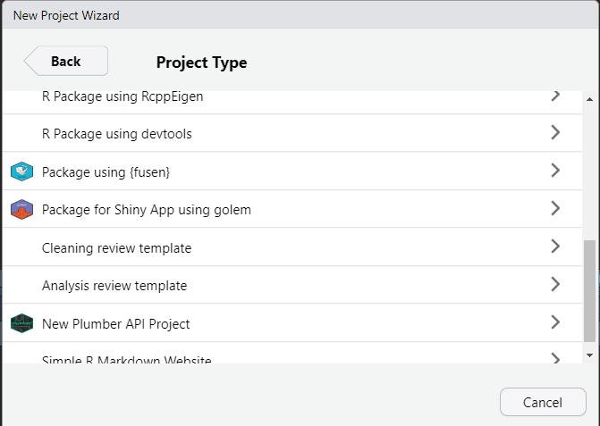
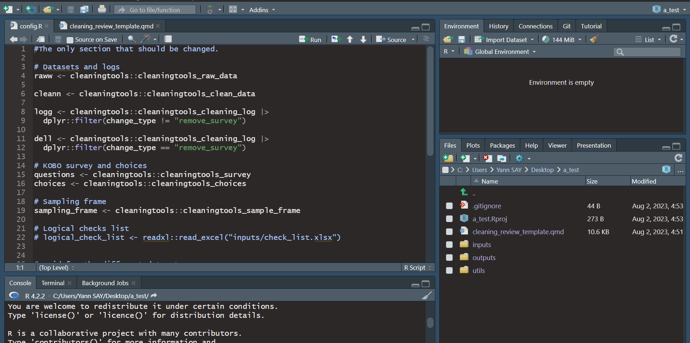
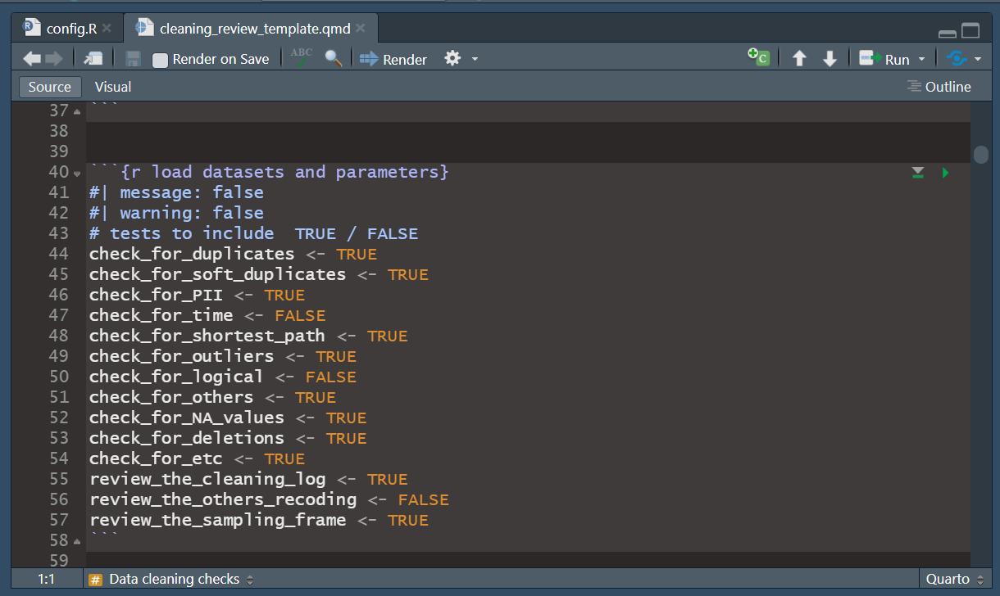
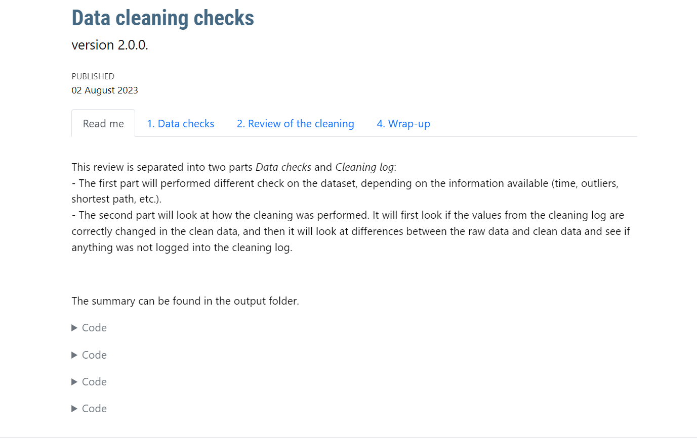
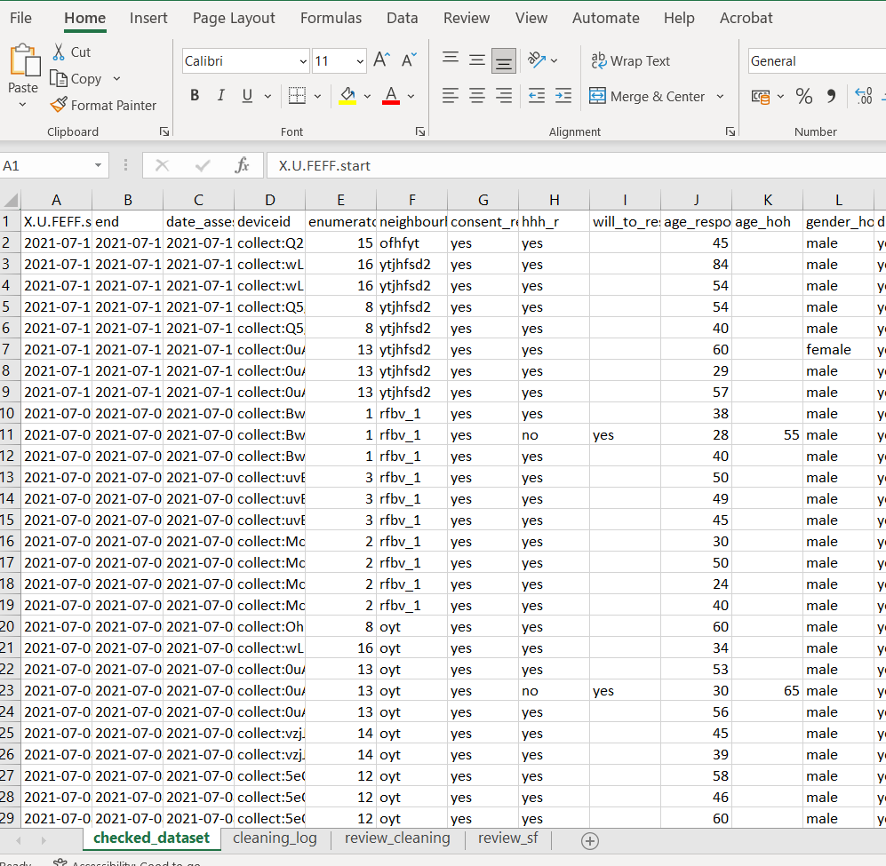
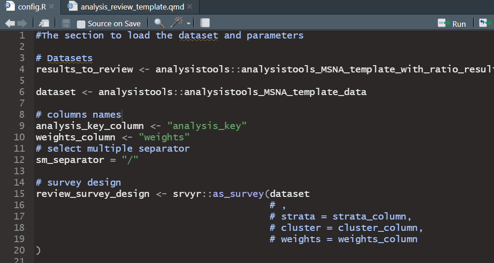
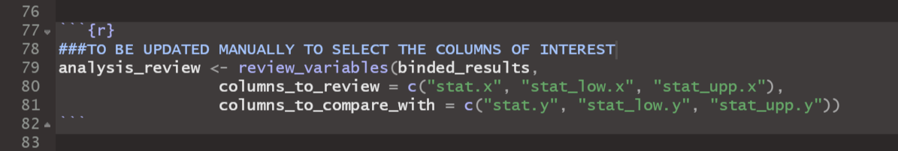
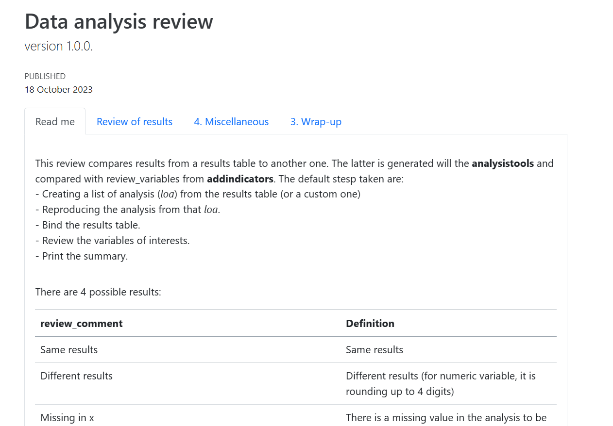

The goal of impacttemplates is to create R project from templates for different use.
Installation
You can install the development version of impacttemplates from GitHub with:
# install.packages("devtools")
devtools::install_github("impact-initiatives/impacttemplates")Example
- Once installed, some project templates will be available in R Studio Project Wizard.

- If you select Cleaning/Analysis review template, you need to give the name of the project folder and the sub directory of it.
Cleaning review template
-
This will create a new folder with your project. It opens a config.R file where you can input several information such as :
where to find the datasets (suggestion is to use the input folder of the project)
KOBO information
Sampling frame
Logical checks list
names of the uuid columns
names of the cleaning log
select multiple separator
sampling frame information
Don’t forget to save.

There is then a quarto file cleaning_review_template.qmd
-
You can click on render to render a file.
- There is a box where you can add or remove tests (with TRUE and FALSE). You can add or remove either if you want just to check quickly something or because the template/functions are not working.

- Once render, this will create an html output that you can navigate to read the results of the checks and review. It will also write an excel file in your outputs folder with the clean dataset reviewed and any indicators added, all the checks, and review.


Analysis review template
-
This will create a new folder with your project. It opens a config.R file where you can input several information such as :
results table to be reviewed
dataset to be used to re-calculate
names of the analysis key column and weights
select multiple separator
creating the survey design
Don’t forget to save.
There is then a quarto file analysis_review_template.qmd. It is a step by step process to recreate, bind and review the analysis.
-
You can click on render to render a file.
- There is a block to be updated manually where you have to input the correct names of columns to be used and compared with.


- Once render, this will create an html output that you can navigate to read the results of review. It will also write an excel file in your outputs folder with the results tables with all the checks, and review.

Code of Conduct
Please note that the impacttemplates project is released with a Contributor Code of Conduct. By contributing to this project, you agree to abide by its terms.